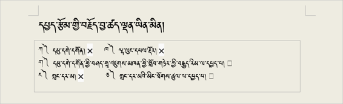
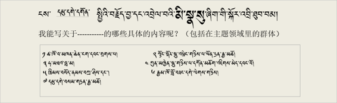
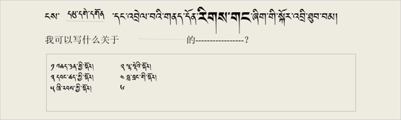
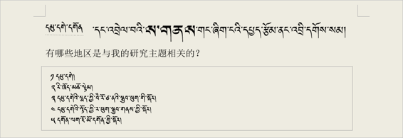
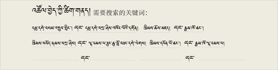

论文选题模式的案例课程。 采用了木阁寺的主题模式并收集了很多相关的话题作为论文的具体选题。要参照这个来给自己的论文选择主题。དཔྱད་རྩོམ་གྱི་བརྗོད་བྱ་འདེམ་གསེས་བྱེད་ཚུལ་གྱི་དཔེ་མཚོན་སློབ་ཚན། དམུ་དགེ་དགོན་པ་སྤྱིའི་བརྗོད་བྱ་རུ་བཟུང་ནས་དེ་དང་འབྲེལ་བའི་བརྗོད་གཞི་མང་པོ་ཞིག་བསྡུ་རུབ་བྱས་ཏེ་དཔྱད་རྩོམ་གྱི་བརྗོད་བྱ་བྱེ་བྲག་ཏུ་བདམས་པ། འདི་ལ་དཔེ་བལྟས་ཏེ་རང་གི་དཔྱད་རྩོམ་གྱི་བརྗོད་བྱ་འདེམ་གསེས་བྱེད་དགོས།
将论文内容具体化的表格 དཔྱད་རྩོམ་གྱི་བརྗོད་བྱ་ཕྲ་རུ་གཏོང་ཚུལ་གྱི་འགེང་ཤོག
请点击下载插在这里的表格。འདིར་བཀོད་པའི་དྲ་ཐག་སྟེང་བསྣུན་ཏེ་འགེང་ཤོག་ཕབ་ལེན་བྱོས། (དྲ་ཐག)
下列主题中的”甲乙丁“，的主题太广，”丙戊“两个是缩小后的主题所以算是合格的主题。འོག་གི་བརྗོད་བྱ་ཁག་ལས་༼ཀ་ཁ་ང།༽གསུམ་བརྗོད་བྱ་རྒྱ་ཆེ་དྲགས་པས་ཚད་ལྡན་དུ་མི་བརྩི།༼ག་ཅ་༽གཉིས། བརྗོད་བྱ་ཇེ་ཆུང་དུ་བཏང་བས་ཚད་ལྡན་དུ་བརྩི།

上述题材中比较广的主题”甲乙丁“中，举“木阁寺” 的例子来缩小研究主题的具体事例如下：གོང་གི་བརྗོད་བྱ་རྒྱ་ཆེ་བ་༼ཀ་ཁ་ང།༽གསུམ་གྱི་ནང་གི་“དམུ་དགེ་དགོན།”དཔེ་མཚོན་དུ་བཟུང་ནས་བརྗོད་བྱ་ཇེ་ཆུང་དུ་གཏོང་ཚུལ་གྱི་དཔེ་མཚོན་གཤམ་ལ་གཟིགས།

有关论文主题的重要人物的名单 དཔྱད་རྩོམ་གྱི་སྤྱིའི་བརྗོད་བྱ་དང་འབྲེལ་བའི་གལ་ཆེའི་མི་སྣ་དག་གི་མཚན་ཐོ།

将涉及论文主题的情况逐条记录下来。དཔྱད་རྩོམ་གྱི་སྤྱིའི་བརྗོད་བྱ་དང་འབྲེལ་བའི་གནས་ཚུལ་གྱི་རིགས་གང་ཡོད་རྣམས་རེ་རེ་བཞིན་ཐོ་རུ་བཀོད།

涉及论文的总体主题，记录跟论文内容价值有关的重要的时间段和时机 དཔྱད་རྩོམ་གྱི་སྤྱིའི་བརྗོད་བྱ་དང་འབྲེལ་བ་ཡོད་ཅིང་། དཔྱད་རྩོམ་གྱི་བརྗོད་བྱར་འཁོད་རིན་ཡོད་པའི་གལ་ཆེའི་དུས་ཚོད་དང་ལོ་ཚིགས་ཁག་རེ་རེ་བཞིན་ཐོ་རུ་བཀོད།

涉及论文的总主题，将论文内容的每一个有价值的重要地方逐个记录下来。དཔྱད་རྩོམ་གྱི་སྤྱིའི་བརྗོད་བྱ་དང་འབྲེལ་བ་ཡོད་ཅིང་། དཔྱད་རྩོམ་གྱི་བརྗོད་བྱར་འཁོད་རིན་ཡོད་པའི་གལ་ཆེའི་ས་གནས་ཁག་རེ་རེ་བཞིན་ཐོ་རུ་བཀོད།


在以上论文主题涉及的具体内容里选一个最好的（案例）གོང་དུ་བཀོད་པའི་དཔྱད་རྩོམ་གྱི་སྤྱིའི་བརྗོད་བྱ་དང་འབྲེལ་བའི་བརྗོད་བྱ་བྱེ་བྲག་ཏུ་བཀོད་པ་རྣམས་ལས་རྩེ་ཕུད་གཅིག་བདམས་པའི་དཔེ་མཚོན།

记录在论文里记载的特定用语或关键词 རང་ཉིད་ཀྱི་དཔྱད་རྩོམ་ནང་བཀོད་པའི་ཐ་སྙད་དམིགས་བསལ་རྣམས་ཐོ་རུ་བཀོད་པའི་དཔེ་མཚོན།
